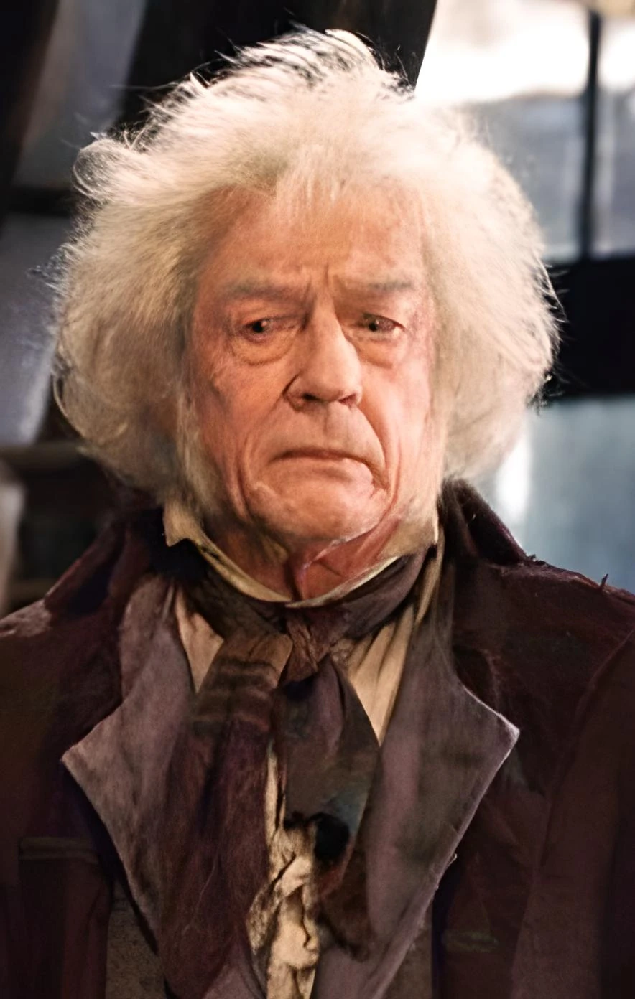
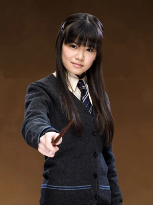
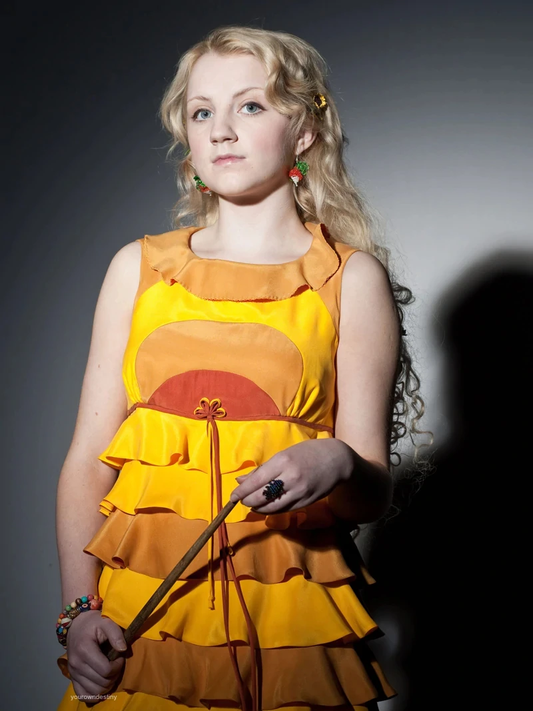

Założyciel - Rowena Ravenclaw
Ravenclaw— jeden z czterech domów w Szkole Magii i Czarodziejstwa w Hogwarcie,
założony przez Rowenę Ravenclaw. Członkowie tego domu w gwarze
uczniowskiej nazywani byli Krukonami, charakteryzowali się mądrością,
inteligencją i bystrością. Barwami Ravenclawu były niebieski i brązowy,
a jego symbolem — orzeł.
Uczniowie
Garrick Ollivander Garrick Ollivander (ur. 25 września w 1907 roku lub wcześniej) — czarodziej półkrwi, syn matki mugolaczki i ojca - czarodzieja czystej krwi. Producent wysokiej jakości różdżek. Jeden z najlepszych w tym fachu. Dorównywał takim wytwórcom jak Mykew Gregorowicz. |
Cho Chang Cho Chang (张秋, Zhāng Qiū, Chang Cho, ur. 1979 r.) — czarownica nieznanego statusu krwi, która uczęszczała do Hogwartu w latach 1990-1997, gdzie została przydzielona do Ravenclawu. Cieszyła się w szkole sławą, ponieważ była szukającą w drużynie Krukonów. Na swoim piątym roku Cho zaczęła spotykać się z Cedrikiem Diggorym, gdy ten został reprezentantem Turnieju Trójmagicznego. Cho była także pierwszą miłością Harry'ego Pottera. Na swoim szóstym roku, wbrew woli jej rodziców wstąpiła do Gwardii Dumbledore'a, organizacji utworzonej przez Harry'ego Pottera. W tym samym roku zaczęła flirtować z Harrym. Po tym jak Marietta Edgecombe, jej najlepsza przyjaciółka zdradziła Gwardię, jej relacje z Harrym rozpadły się. Ona jednak pozostała wierna swojej szkole i Gwardii. Cho przetrwała II Wojnę i ostatecznie poślubiła mugola. |
Luna Skamander Luna Skamander (z d. Lovegood; ur. 13 lutego 1981 r.) — czarownica prawdopodobnie czystej krwi. Członkini Gwardii Dumbledore'a. W latach 1992-1998 uczęszczała do Szkoły Magii i Czarodziejstwa w Hogwarcie, podczas ceremonii przydziału została przydzielona do Ravenclawu. Żona Rolfa Skamandera. Przez niektórych była uznawana za nienormalną osobę, ponieważ wierzyła w nieistniejące magiczne stworzenia i podpisywała się za pomocą lusterka, dzięki czemu podpis był do góry nogami. |
|---|